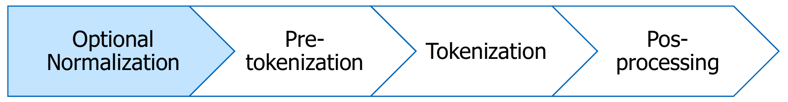

A learned subword tokenizer represents text as reusable pieces. Its surrounding pipeline decides what to preserve, where to split, and how to mark structure. Two systems can both use BPE and still give different inputs to a language model. This handout explains why, with small examples you can work through and experiments you can run.
Handout #8 introduced word, character, and subword tradeoffs. Here we follow the consequences: what information survives the pipeline, how merges are learned, and how those same merges are used on new text. Predict each result before opening its answer.
- Scope
- Core companion to slides 13–36. Slides 31 and 35 are bonus. The optional extension also covers the later material, slides 37–49.
- Time
- About 60–80 minutes for the core reading and checks; 20–30 more for the code lab. Bonus sections can be read independently.
- By the end
- Audit a tokenizer for information loss; count and apply BPE merges; distinguish frequency during training from rank during encoding; explain byte coverage and decoding; diagnose mismatches between a tokenizer and its model.
- Assumes
- Token IDs and vocabulary tradeoffs from Handout #8 §8, and next-token prediction from Handout #2.
Find the companion reading for a slide topic
1A pipeline, with several chances to lose information
Slides 13–18

For an ordinary text string $x$, a lossless text codec should satisfy $D(E(x))=x$, where $E$ encodes and $D$ decodes. That does not automatically hold for the complete model-input pipeline: normalization can alter $x$, truncation can remove a suffix, and post-processing can insert structural tokens. Always state which operations your round-trip test includes.
1.1 Normalization chooses which distinctions to erase
Suppose the inputs are A and Ａ (fullwidth A). NFKC maps both to A. A decoder receiving only that normalized value cannot know which original was supplied. More training data cannot recover a distinction that the representation removed.
NFC combines canonically equivalent representations, such as e plus a combining acute accent and precomposed é. NFKC also folds compatibility variants, such as fullwidth letters. Neither promises recovery of the original code-point sequence; neither is a general rule for equating everything that looks alike. See Unicode UAX #15.
import unicodedata as ud
assert ud.normalize("NFC", "e\u0301") == "é"
assert ud.normalize("NFKC", "Ａ") == "A"
assert "e\u0301".encode("utf-8") != "é".encode("utf-8")Other cleanup rules have similar consequences: lowercasing merges US with us; collapsing repeated spaces can change code indentation; dropping punctuation changes Let's eat, Grandma!. Such transformations can suit a task, but “cleaner” does not imply “equivalent.” A reversible merge algorithm cannot undo a lossy preprocessing step.
A system normalizes with NFKC, then uses a reversible byte tokenizer. Its test is decode(encode(normalize(x))) == normalize(x). Does passing prove that original user text can be recovered?
Try it first, then reveal the answer
No. It verifies the codec on the normalized text. Test against x to check original-text fidelity: Ａ is a counterexample. If the application needs the original, retain it separately or avoid the lossy normalization.
1.2 Pre-tokenization puts walls around the merge algorithm
Take two chunks, [the] and [ cat]. The leading space is part of the second chunk. A merge can build cat inside that chunk, but cannot build the cat across the wall. A token containing a space is therefore not necessarily a token spanning two words.
Pre-tokenization and BPE answer different questions: where may pieces combine? and which permitted combinations were learned? Increasing the vocabulary cannot overcome a boundary imposed by the first stage. Training and encoding must use compatible rules; changing the regex changes the tokenizer even if the merge table stays fixed.
Throughout our character examples, · displays one actual space. Square brackets surround pre-tokenizer chunks; vertical bars inside them separate current tokens. Neither notation is inserted into the source text.
A pre-tokenizer produces [123] and [45]. Does this guarantee two final tokens? Could BPE produce one token 12345?
Try it first, then reveal the answer
It does not guarantee two: each chunk may split further if the needed merges are missing. The result could be [12 | 3] [4 | 5]. One token spanning 12345 is forbidden under these boundaries. Chunk length is an upper bound on token span, not a promise of a vocabulary entry.
1.3 Post-processing prepares a sequence for a model
Consider content token IDs [17, 42]. A hypothetical model expects [BOS, 17, 42, EOS]; a batch may then append PAD to match another example's length. These operations serve different purposes.
| Operation | What it changes | Common mistake |
|---|---|---|
| Add BOS/EOS or message markers | Sequence structure and prediction targets | Adding a second BOS after a template already inserted it |
| Pad | Batch shape, without adding content | Letting artificial padding contribute to the loss |
| Truncate | Which content survives | Assuming a shortened sequence still represents the full input |
| Map pieces to IDs | Which embedding/output rows are used | Combining one tokenizer's IDs with another model's weights |
UNK signals a coverage failure; PAD fills unused positions; EOS is a meaningful boundary that the model may need to predict. They are not interchangeable roles. An attention mask controls which positions the model may attend to; a loss mask controls which targets contribute to the objective. Verify both in a training pipeline.
Chat protocols also assign dedicated IDs to message boundaries and other structure. The readable spelling of a special token and that token's ID are different things: literal text that resembles a marker need not become a control token. Recognition depends on the encoder's special-token policy and the template that constructs the conversation. Learn the role of these markers rather than memorizing any one model's spellings.
A codec reconstructs every test string exactly. After you enable a 128-token input limit, long strings fail the round-trip test. Is the BPE merge table necessarily broken?
Try it first, then reveal the answer
No. Truncation discards content after tokenization. Test the codec separately, then test the complete pipeline against its intended behavior. A padding-only change should be reversible when padding positions are identified and removed; truncation generally is not.
2Training BPE: a small compression experiment
Slides 19–28
BPE training repeatedly selects a frequent adjacent pair, creates a new vocabulary entry for its concatenation, and replaces non-overlapping occurrences. The vocabulary retains the old entries too. This is a discrete procedure over a text corpus, separate from neural-network training and backpropagation.
The learned object is not just a bag of substrings. Keep the base alphabet, ordered merge rules, token-to-ID mapping, and preprocessing configuration. Encoding new text needs that same contract.
2.1 Extend the slide example, one decision at a time
Use the slide corpus jhu jhu jhu hopkins hop hops hops, with each space attached to the following word. There are 33 initial character tokens and 10 distinct base symbols. Count adjacent pairs inside the seven chunks; never count across their boundaries.
[j | h | u] [· | j | h | u] [· | j | h | u] [· | h | o | p | k | i | n | s] [· | h | o | p] [· | h | o | p | s] [· | h | o | p | s]
Initially, · + h, h + o, and o + p each occur four times. Frequency alone does not choose among them. The slides choose h + o; that is a valid tie choice, not a uniquely determined answer.
| Step | Chosen pair | Count before merging | Corpus tokens after | Vocabulary size |
|---|---|---|---|---|
| Start | — | — | 33 | 10 |
| 1 | h + o → ho | 4 | 29 | 11 |
| 2 | ho + p → hop | 4 | 25 | 12 |
| 3 | · + hop → ·hop | 4 | 21 | 13 |
Step 2 requires recounting: the old pair h + o has disappeared and new pairs such as ho + p exist. After step 3, the chunks ending in hopkins, hop, and hops share a token ·hop. This sharing follows frequency; it does not establish a shared linguistic meaning.
For this example, if each merge creates a distinct entry and there are $M$ merges and $S$ special entries, $|V|=10+M+S$. For byte-level BPE, replace 10 by 256. A vocabulary count and a corpus token count measure different things: one grows while the other shrinks here.
Try this: follow h + o, then ho + p, then · + hop. Reset and choose · + h first. Both are valid frequency-based training paths, but they learn different intermediate entries. Reproducible training therefore needs a tie-breaking policy.
After the three table rows, which pairs have the highest count? If you choose j + h, what happens to corpus length and vocabulary size? Why not choose ·hop + s first?
Try it first, then reveal the answer
j + h and h + u tie at 3. Choosing j + h gives 18 corpus tokens and 14 vocabulary entries. ·hop + s has count 2, so it is not a maximum-frequency choice at this step.
2.2 Counting occurrences is not the same as replacing them
In a a a, the adjacent pair (a,a) occurs at positions (1,2) and (2,3). The count is 2, but those occurrences overlap. A left-to-right non-overlapping replacement yields aa a, which saves only one token.
This distinction matters when predicting compression. Pair counts can overestimate the immediate number of replacements for repeated symbols. The algorithm is still well-defined if the replacement convention is fixed. It is a greedy heuristic, not a proof that every step gives the largest possible compression gain.
In one chunk aaaaa, how many adjacent (a,a) pairs are counted? How many replacements occur in one left-to-right pass? What is the resulting token sequence?
Try it first, then reveal the answer
Four pairs are counted; two non-overlapping replacements occur. The result is [aa | aa | a], three tokens. The newly formed pair (aa,aa) is a different pair and needs its own learned rule before it can merge.
3Encoding: use the learned ranks, not new frequencies
Slides 29–30 and 32. Efficient implementation is bonus (§8.1).
Once training ends, the tokenizer's parameters are fixed. On a new chunk, begin with base units and repeatedly apply the earliest-learned currently applicable rule. Stop when no learned rule applies. A low rank means high priority; the numeric token ID only doubles as a rank in implementations that deliberately assign IDs in merge order.
| Training | Encoding new input |
|---|---|
| Count pairs to decide what to learn next | Find adjacent pairs whose rules already exist |
| Choose a maximum-frequency pair | Choose the minimum merge rank |
| Create an entry and record its rank | Reuse existing entries and ranks |
| Corpus statistics change the tokenizer | Input content changes the output sequence, not the tokenizer |
3.1 A rule can become applicable only after another rule
The slides' rules are l+o→lo (rank 1), lo+w→low (2), e+r→er (3), and low+er→lower (4). For lowered:
[l | o | w | e | r | e | d] [lo | w | e | r | e | d] rank 1 [low | e | r | e | d] rank 2, before rank 3 [low | er | e | d] rank 3 [lower | e | d] rank 4
The tokenizer never saw a rule for lower+e, so it stops. It can represent an unseen word using smaller known pieces; it need not store every word. This example assumes the required base characters are supported.
3.2 Why “take the longest token” is not BPE
Consider another learned table, in this order: b+c→bc, a+b→ab, c+d→cd. For example, these can be learned from separate chunks bc repeated four times, ab three times, cd twice, and abcd once. Encoding abcd applies b+c first, yielding [a | bc | d]. The entries ab and cd exist, but neither can form after b and c have been consumed together.
So BPE does not generally search for the segmentation with the fewest tokens or take the longest vocabulary match. The ordered rules matter. Here [ab | cd] would use only two tokens, while BPE produces three. Decoding [ab | cd] and [a | bc | d] gives the same text, but encoding that text selects one canonical sequence under this tokenizer. Thus $D(E(x))=x$ does not imply $E(D(z))=z$ for every arbitrary token sequence $z$.
Learned rules are a+b→ab (rank 1), then b+c→bc (rank 2). Encode the single chunk abcbcbc. The new input has three (b,c) pairs and only one (a,b). Which rule goes first?
Try it first, then reveal the answer
Rank 1 goes first regardless of the new counts: [ab | c | b | c | b | c]. Then rank 2 yields [ab | c | bc | bc], four tokens. Picking the most frequent new pair first would instead yield [a | bc | bc | bc]; that uses a different encoding algorithm.
4Bytes solve coverage, not every representation problem
Slides 33–34 and the coverage issue in slide 36
Character BPE initialized only with characters seen in training can encounter a new character it cannot represent. Adding more merges does not repair a missing base unit. Byte-level BPE instead begins with all 256 possible byte values and converts text to UTF-8 bytes before applying merges. Every well-formed Unicode text string has a UTF-8 representation, so the ordinary-text codec needs no unknown token for an unseen word or character.
Keep three levels distinct: a visible character can contain several Unicode code points; a code point can require several UTF-8 bytes; a BPE token can hold one byte or many. “One character = one byte = one token” is only true in particular examples.
| Text | Code points | UTF-8 bytes (hex) | Base byte tokens, before merges |
|---|---|---|---|
A | U+0041 | 41 | 1 |
é | U+00E9 | C3 A9 | 2 |
é (decomposed) | U+0065 U+0301 | 65 CC 81 | 3 |
😀 | U+1F600 | F0 9F 98 80 | 4 |
Coverage is not compression. A rarely seen script or domain may be representable but need more tokens per passage. Under a fixed token budget, that leaves less room for context. Token counts depend on the training mixture and learned vocabulary; there is no universal character-to-token ratio.
4.1 Concatenate bytes first, then decode the text
A byte token need not be valid UTF-8 by itself. Suppose two token entries contain C3 and A9. Together they form é. Decoding each separately with replacement characters loses information before concatenation.
pieces = [bytes([0xC3]), bytes([0xA9])]
assert b"".join(pieces).decode("utf-8") == "é"
assert "".join(p.decode("utf-8", errors="replace") for p in pieces) == "��"This is why a vocabulary viewer may display an odd fragment or a replacement glyph for a perfectly useful token. A round trip from valid text preserves valid bytes when preprocessing is lossless. Arbitrary model-generated IDs are a different case: their concatenated bytes may be invalid UTF-8, so a decoder needs a policy such as replacement or incremental buffering.
A byte-level tokenizer encodes a novel name as 18 tokens. Has it failed its no-unknown guarantee? Does that guarantee that the model understands the name?
Try it first, then reveal the answer
No coverage failure occurred: the name is represented exactly. The guarantee says nothing about compactness or understanding. The model may still have insufficient evidence to infer what the name refers to. Lossy normalization or truncation elsewhere can also prevent exact recovery despite byte coverage.
5What changes for the language model?
Vocabulary tradeoff in slide 32; algorithm/library distinction in slide 33; limitations in slide 36
5.1 Moving cost from sequence length to vocabulary size
An embedding table with vocabulary size $|V|$ and hidden size $d$ has $|V|d$ parameters. An untied output projection adds another $d|V|$ weights (plus any bias). Weight tying shares the matrix but does not eliminate the cost of producing vocabulary logits.
For a concrete illustration, let $d=1024$ and increase the vocabulary from 32,000 to 48,000. Each matrix gains $16{,}000\times1024=16{,}384{,}000$ parameters. At two bytes per weight that is 32.768 MB, or 31.25 MiB, per matrix, before gradients and optimizer state. If this change reduces a passage from 1,000 to 800 tokens, it also reduces the number of prediction positions. Whether total training becomes cheaper depends on both effects and the architecture.
Do not read a vocabulary-size leaderboard as a quality ranking. Corpus, language mixture, model size, context budget, and implementation all affect the useful tradeoff. Likewise, a library is not an algorithm: SentencePiece supports more than one segmentation algorithm, and BPE can use characters or bytes as its base units. Compare those axes separately.
5.2 Useful pieces need not be morphemes
The example Under | stand does not mean “stand beneath.” BPE rewards recurring adjacent forms; it does not optimize a linguistic analysis. Sharing pieces can help parameter reuse without guaranteeing that the shared substring has the same meaning everywhere.
There is also a structural limitation: contiguous pieces cannot directly isolate a root whose consonants are interleaved with other material, as in Arabic root-and-pattern morphology. Changing a few merge ranks cannot turn a contiguous segmentation into a noncontiguous analysis. The model may still learn such relationships from context; tokenization simply does not encode them explicitly.
5.3 The tokenizer and the checkpoint are one interface
If ID 100 means cat in the pretrained tokenizer but enzyme in a replacement, embedding row 100 and output logit 100 retain their old learned meanings. A successful tensor-shape check will not catch this semantic mismatch. Save and load the tokenizer configuration with the checkpoint.
A compatible change must preserve or deliberately adapt the model's ID-to-piece relationship. Appending new entries also requires suitable embedding/output rows and training; preserving old IDs alone does not teach the model the new entries. Even a normalization or pre-tokenization change can shift inputs while leaving every tensor shape unchanged.
6Core practice: explain the failure, then repair the test
These checks use only core material. They do not require efficient priority queues, byte-fallback internals, WordPiece, Unigram LM, or the other bonus topics.
A character BPE training set has separate chunks aba with frequency 3 and ab with frequency 2. Count (a,b) and (b,a). Apply the first merge. What are the corpus token count and vocabulary size before and after?
Try it first, then reveal the answer
The pair counts are 5 and 3. Merge a+b→ab, yielding three [ab | a] chunks and two [ab] chunks. The corpus goes from $3(3)+2(2)=13$ tokens to $3(2)+2(1)=8$. The vocabulary grows from two entries to three, assuming no special tokens. Deduplicating chunks without retaining their frequencies would change the training statistics.
A character tokenizer supports a, b, c and has learned only a+b→ab. Encode cab. What can you conclude about café? How would an all-byte base change the coverage argument?
Try it first, then reveal the answer
cab becomes [c | ab], even if that word was absent during training. f and é are not supported by this stated character alphabet, so the tokenizer needs an unknown/error policy. With all 256 bytes available, the UTF-8 bytes are representable even without useful merges.
Two tokenizers contain a, b, c, ab, bc. One learns a+b before b+c; the other reverses that order. How do they encode abc? Must their decoding disagree?
Try it first, then reveal the answer
The first gives [ab | c]; the second gives [a | bc]. Both decode to abc. Identical vocabulary strings do not specify identical BPE encoding.
A model has a 2,048-token input limit. One tokenizer needs 2,050 content tokens for a passage; another needs 1,900. Both add two structural tokens. How many positions exceed the limit in each case? Can you infer that the second tokenizer gives better task accuracy?
Try it first, then reveal the answer
The totals are 2,052 and 1,902, so the first exceeds the limit by 4 and the second fits with 146 positions left. Accuracy cannot be inferred from token count alone. Which material is truncated matters, and each tokenizer needs a compatible model.
A team lowercases text, collapses spaces, trains a character BPE tokenizer on English, replaces the tokenizer in an existing checkpoint, and reports three bugs: code does not round-trip; a new symbol becomes UNK; and predictions become nonsensical even for ordinary text. Identify a separate plausible cause and a targeted test for each.
Try it first, then reveal the answer
Round trip: cleanup destroyed case/spacing; compare raw and normalized strings before running BPE. UNK: the base alphabet lacks the new symbol; inspect coverage or test an all-byte tokenizer. Predictions: the new ID mapping may not match pretrained rows; verify tokenizer identity and encode a known probe string with the checkpoint’s original tokenizer. Fixing one stage does not automatically fix the others.
7Read real code: a small tokenizer you can take apart
Read minbpe/basic.py (74 lines) and the helpers in minbpe/base.py (165 lines). Links are pinned to revision 1acefe89412b. The excerpts below are verbatim individual lines from this MIT-licensed project; the lab code is written for this handout.
BasicTokenizer is intentionally simpler than the slide pipeline: it uses raw UTF-8 bytes, without pre-tokenization or special-token handling. It can therefore learn merges across spaces and word boundaries. Do not expect it to reproduce the chunked jhu exercise or a production tokenizer's output.
7.1 Find the training decision
basic.py · BasicTokenizer.train · verbatim line
pair = max(stats, key=stats.get)Trace how get_stats obtains stats, how the next ID is assigned, and how merge rewrites the sequence. Connect these operations to §2. Then inspect base.py: the counter sees overlapping pairs, while replacement advances by two after a match. That is the overlap distinction in §2.2.
7.2 Find the encoding decision
basic.py · BasicTokenizer.encode · verbatim line
pair = min(stats, key=lambda p: self.merges.get(p, float("inf")))Here the pair counts are not the priority. The dictionary keys identify adjacent candidates; stored merge IDs supply their order. Inspect the following membership check: it stops when no candidate has a learned rule. IDs work as ranks in this implementation because training assigns new IDs monotonically (§3).
7.3 Find the decoding decision
basic.py · BasicTokenizer.decode · verbatim line
text_bytes = b"".join(self.vocab[idx] for idx in ids)The next line UTF-8 decodes the concatenated bytes. Moving decoding inside the loop would break multibyte characters (§4.1). Read the vocabulary construction in train: each new token stores the concatenation of its two parents’ byte strings.
7.4 Change one word, observe a different tokenizer
In a local checkout of minbpe at the linked revision, run this from the repository root. For this tiny ASCII corpus, ties are resolved by first encounter in the dictionary; that is the behavior of the pinned implementation.
from minbpe import BasicTokenizer
from minbpe.base import get_stats, merge
tok = BasicTokenizer()
tok.train("ababac", vocab_size=258)
assert tok.merges == {(97, 98): 256, (256, 256): 257}
assert tok.encode("ababac") == [257, 97, 99]
assert tok.decode(tok.encode("café 😀")) == "café 😀"
assert get_stats([1, 1, 1]) == {(1, 1): 2}
assert merge([1, 1, 1], (1, 1), 2) == [2, 1]
print(tok.encode("ababac")) # [257, 97, 99]Change max to min in the training pair-selection line only. Predict both merges before rerunning in a fresh Python process. Keep encode unchanged.
Does the changed version necessarily stop round-tripping? What does it encode ababac into after two merges?
Try it first, then reveal the answer
It first learns a+c→ac (ID 256), then b+a→ba (ID 257); tied minima follow first encounter in this implementation. The encoding is [97, 257, 98, 256], representing [a | ba | b | ac]. The original produced [abab | a | c]. The changed version uses four tokens instead of three, but both round-trip. The bug is that training now favors least-frequent pairs; a round-trip test alone does not verify the intended training rule. Restore max afterward.
On a fresh tokenizer, what happens with train("a", vocab_size=257)? Edit the training loop to stop cleanly if no adjacent pairs remain. What vocabulary size should it actually produce? What else should the API tell its caller?
Try it first, then reveal the answer
The original reaches max on an empty dictionary and raises ValueError. Add if not stats: break immediately after counting pairs. The resulting vocabulary contains the 256 base bytes and zero merges, not 257 entries. The API should report that the target size was not reached (or deliberately reject the request), rather than silently claiming success. Test empty text too.
For one final code check, replace the decode method with one that decodes each vocabulary entry separately. Use an untrained BasicTokenizer() on é: correct decoding returns é; per-token replacement decoding returns ��. Restore the original method. Together these probes distinguish an algorithmic training error, an exhaustion error, and a decoding error.
8Bonus Optional extensions
Everything in this section, including its checks, is optional. It may be used for bonus questions, but not mandatory questions. The core exercises above do not depend on it.
8.1 Bonus: make encoding efficient (slide 31)
A simple encoder rescans a chunk after every merge. With $n$ starting units, there can be at most $n-1$ individual merges, and repeatedly scanning and rebuilding a length-$O(n)$ sequence gives an $O(n^2)$ worst-case upper bound.
An efficient approach keeps a linked sequence of live tokens and a min-priority queue of mergeable adjacent pairs, keyed by learned rank. After merging two neighbors, only the pairs at the new token's left and right boundaries need fresh lookup. Old queue entries can become stale; validate that their endpoints are still live and adjacent before applying them. Position or version markers make that check possible.
With expected constant-time hash lookups and constant-time neighbor updates, there are $O(n)$ candidate insertions and removals, each costing $O(\log n)$ in the queue: $O(n\log n)$ expected time per chunk. The rank table takes $O(V)$ entries loaded once; processing a chunk does not require scanning all $V$ rules. Include deterministic handling of ties/overlaps if matching another implementation exactly.
Start with [a | b | c]. The queue contains (a,b) at rank 1 and (b,c) at rank 2. What must happen to the rank-2 candidate after rank 1 is applied?
Try it first, then reveal the answer
It must be removed or skipped when popped: its original b endpoint has been consumed. The current candidate is (ab,c), which needs its own lookup and may have no rule at all. A priority queue alone does not track adjacency correctly.
8.2 Bonus: character BPE with byte fallback (slide 35)
The slide titled “BPE + Character fallback” describes character-based BPE with byte fallback: common characters are ordinary pieces; an unsupported character is emitted as its UTF-8 bytes using reserved byte IDs. In this scheme, the fallback byte entries do not participate in learned character merges. This is different from byte-level BPE, whose ordinary merging alphabet is bytes from the start.
For an unsupported 🦙, the fallback is F0 9F A6 99, four byte tokens. Ordinary learned pieces contain complete characters, but a fallback sequence still splits a character over multiple tokens. The cost is the character's UTF-8 byte length (one to four bytes in general), rather than a guarantee of a compact learned piece. Normalization elsewhere may still be lossy.
Why could byte-level BPE eventually represent a frequent emoji with one token, while that emoji remains four tokens under a frozen character tokenizer’s fallback path?
Try it first, then reveal the answer
Byte-level BPE can learn merges joining those bytes. In the stated fallback scheme, fallback bytes are emitted for an unsupported character and are not merged by the character BPE rules. The frozen model would need an updated ordinary vocabulary entry and compatible training to change that behavior.
8.3 Bonus: two alternatives to ranked BPE (slides 37–39)
WordPiece. The illustrative training score is $f(a,b)/(f(a)f(b))$, favoring association relative to the pieces' individual frequencies. It is a reconstruction, not Google's released original trainer. At encoding time, WordPiece typically uses longest matching vocabulary prefixes with continuation markers such as ##, rather than replaying BPE ranks. This distinction explains why a similar-looking vocabulary can produce different segments. See the Hugging Face WordPiece explanation.
Pair A has $f(a,b)=100$, $f(a)=1000$, $f(b)=1000$. Pair B has $f(c,d)=10$, $f(c)=10$, $f(d)=20$. Which does maximum-frequency BPE prefer? Which does the illustrative WordPiece score prefer?
Try it first, then reveal the answer
BPE prefers A (100 versus 10). The scores are $0.0001$ and $0.05$, so the illustrative WordPiece rule prefers B. The objectives reward different properties; neither computation establishes which gives better downstream language modeling.
Unigram LM. Instead of adding merges, start with many candidate substrings, estimate piece probabilities, and prune pieces whose removal has little effect on corpus likelihood while preserving coverage. For encoding, seek the segmentation with the largest product of piece probabilities; dynamic programming can find it. The tokenizer's unigram probabilities are not the contextual probabilities of the language model. See Kudo (2018).
A toy unigram vocabulary has probabilities $p(a)=0.4$, $p(b)=0.4$, $p(ab)=0.1$, $p(ba)=0.1$. Compare the only three segmentations of aba: a|b|a, ab|a, and a|ba.
Try it first, then reveal the answer
The products are 0.064, 0.04, and 0.04. The three-piece segmentation wins despite using more tokens. For training, the likelihood of text sums over allowed segmentations; finding the single best segmentation at encoding time is a different operation. More linguistic-looking boundaries are also not, by themselves, proof of better downstream performance.
8.4 Bonus: whitespace and numbers expose the boundary rules (slides 40–43)
Whitespace is data. Encoding four indentation spaces as one token preserves exactly the same bytes as four one-space tokens; deleting three spaces does not. To learn a multi-space token, the pre-tokenizer must permit those spaces to occur together in a chunk, and the vocabulary must supply the corresponding merge path. The slide's whitespace example is a reminder to inspect both stages.
Numbers expose a related tradeoff. Per-digit tokens give consistent small units but long sequences. Limiting numeric chunks to at most three digits bounds token spans, but does not guarantee every chunk is one token. Left grouping yields 123|456|7 for 1234567; right grouping yields 1|234|567. Right grouping aligns boundaries with powers of 1,000, which can make carry structure easier to represent. It does not by itself implement arithmetic or guarantee improved accuracy.
Version A replaces four spaces by one token whose byte payload is four spaces. Version B replaces four spaces by one space before tokenization. Which version can pass an exact round trip? If a numeric pre-tokenizer produces [123] [456] [7], can BPE later create 67?
Try it first, then reveal the answer
A can pass; B loses the original spacing unless extra information is stored elsewhere. 67 crosses the boundary between [456] and [7] and cannot form under those rules.
8.5 Bonus: reserved IDs and measuring compression (slides 44–46)
A reserved token ID can have an allocated embedding/output row without an assigned application meaning. Naming that ID later can avoid resizing a matrix, but training must still teach the model how to use it. Distinguish usable text pieces, special tokens, reserved IDs, and allocated matrix rows when comparing reported vocabulary sizes. Hardware-friendly padding may make the last count larger than the first.
Sequence shortening also changes the denominator of per-token perplexity. If total negative log-likelihood in bits is $L$ on $T$ scored tokens, perplexity is $2^{L/T}$. For the same 100-byte test text, suppose model A uses 50 tokens and totals 200 bits; B uses 25 tokens and totals 150 bits. A has perplexity 16; B has perplexity 64, yet B spends fewer bits per byte: 1.5 versus 2. A lower per-token perplexity cannot rank models with different tokenizers.
Bits per byte is $L/B$, with $B$ the number of bytes in the same original test text. Use the same text, lossless preprocessing, and a consistent boundary/scoring convention. It normalizes the length unit; it does not erase dataset or language differences. For token models this ordinarily scores the chosen encoded sequence, not an explicit sum over every token sequence that decodes to the same text.
A checkpoint already allocates 128 unused IDs. You assign one to <CHEMICAL>. Have you increased the matrix size? Have you taught the model chemistry?
Try it first, then reveal the answer
No to both. Allocation was already present, but the newly assigned role needs appropriate data and training. The template, encoder, decoder, and model must agree on what the ID now means.
8.6 Bonus: changing what a token can contain (slides 47–49)
Multiword tokens. SuperBPE uses a two-stage approach, first learning subwords and then permitting merges spanning word boundaries. The key change is the boundary constraint, not merely the presence of spaces inside tokens. Longer units can shorten sequences, but need corpus evidence and may behave differently across languages and domains.
Text in visual space. The slide connects rendered-text models such as PIXEL with document compression approaches such as DeepSeek-OCR. Rendering text as images and encoding visual features changes the representation and its costs. A small number of visual tokens is not a byte-exact reversible codec: assess transcription accuracy, small text, layout, resolution, and visual-encoder cost. Any reported compression ratio is conditional on the evaluation setup, not a universal replacement ratio for text tokens.
One system takes 1,000 text tokens; another takes 100 visual tokens for the same page. Is that enough evidence for a tenfold speedup with no information loss?
Try it first, then reveal the answer
No. Compare end-to-end latency and memory including image encoding, specify the model and page resolution, and measure recovery and downstream task accuracy. Similar average accuracy can hide failures on small symbols, tables, or exact strings. Token counts alone establish neither speed nor losslessness.